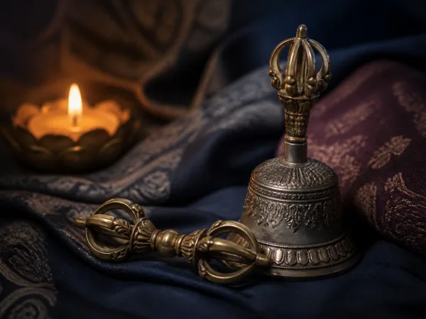

01
Ngöndro Sadhana Practice
By PermissionIncluded in membership
With Lama Philip and Scott. Refuge, prostrations, Vajrasattva, mandala offerings, and guru yoga: the foundational preliminary practices.
Request Access
“Whatever actions you engage in, do not do anything non-dharmic that fails to become the accumulation of merit and wisdom.” - Guru Padmasambhava
Because of the nature of this material, access is limited to authorized students who have received empowerment.
Vajragarbha offers transformative, classically precise instruction from the lower tantras through Vajrayoginī, Chakrasamvara, and other Highest Yoga Tantra teachings.
With Lama Philip and Scott. Refuge, prostrations, Vajrasattva, mandala offerings, and guru yoga: the foundational preliminary practices.
Request Access
With Lama Philip. The meaning of purification and why the preliminary practices matter before advanced tantra.
Request Access
Led by senior sangha students. The Compassion Buddha practice.
Request Access
With Lama Kinley. Nam Chö tradition tsalung and bodhicitta teachings, introducing subtle body practice.
Request Access
With Lama Michael. Direct instruction on the enlightenment path of Vajrayoginī practice.
Request Access
With Lama Philip. Generation and completion stage meditation practices.
Request Access
Foundation to advanced. Body and mind purification practices supporting the transformation toward enlightenment.
Request Access
With Lama Michael. Advanced tantric practices including tummo, illusory body, dream yoga, bardo, and phowa.
Request AccessAll courses require empowerment, permission, and password access.
Email for Permission Become a MemberJoin the Sangha in real time for teaching, meditation, and questions. Recordings are available when you cannot attend live.
Live teaching, Q&A, and the tantra recording library - once permission has been granted.
Request AccessTeachings and Q&A with Lama Philip, for practitioners who have received empowerment.
Times are shown in Pacific Time. Access links and schedule updates are shared once authorization is confirmed.
No sincere student will be turned away.
Vajragarbha’s access commitment
Email your background and current practice to info@dzogchenteaching.com to ask about next steps or financial assistance.Tell us about your current practice, prior teachers, and why you feel called to the tantric path.
Lama Michael and Lama Philip will respond with next steps, including any empowerment required.
Once authorized, join the live Thursday teaching and the full tantra course library.
Yes. Because of the nature of this material, tantra teachings are limited to students who have received empowerment and authorization from Lama Michael and Lama Philip.
Begin with the free mindfulness foundation and the Mahayana teachings first. The teaching team can help you find the right stage before moving toward tantra.
Email info@dzogchenteaching.com with your background and current practice, and we'll be in touch about next steps.
Vajragarbha states that no sincere student will be turned away. Contact info@dzogchenteaching.com to ask about assistance.
Email your background to request permission for the tantra teachings, or join the Sangha to begin the full path from its foundation.